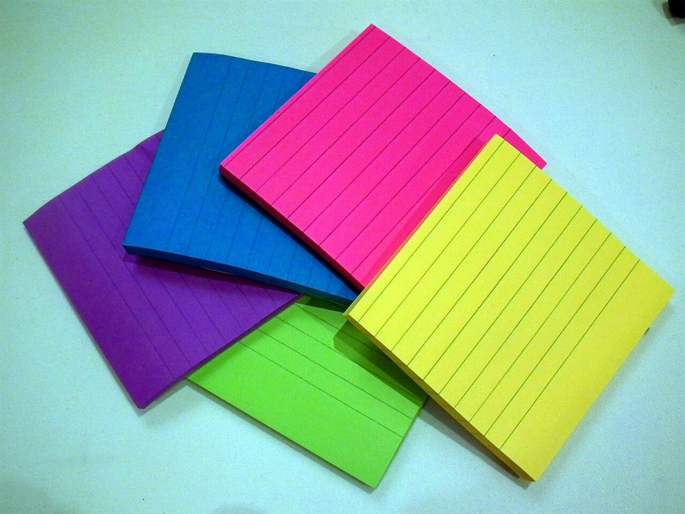

口コミ
以下は実際のお客様の声ではありません。口コミ掲載イメージとして制作側が作成した創作例です。
本番では、お店にいただいた実際の声に差し替えます。
※「本通の掲示板」は制作側の案です。お店の理念や店名の意味ではありません。
イメージ例
初めてでも入りやすい雰囲気で、気負わずに過ごせました。
イメージ例
ゆっくりした時間を過ごせて、気持ちが落ち着きました。
イメージ例
待ち合わせの前や、ちょっと一息つきたいときに使いやすいです。

掲載写真はフリー素材のイメージで、実際の店舗・商品ではありません。他地域で撮影されたものや、撮影地が不明なものを含みます。
お店へのご連絡
掲載写真はフリー素材のイメージで、実際の店舗・商品ではありません。他地域で撮影されたものや、撮影地が不明なものを含みます。